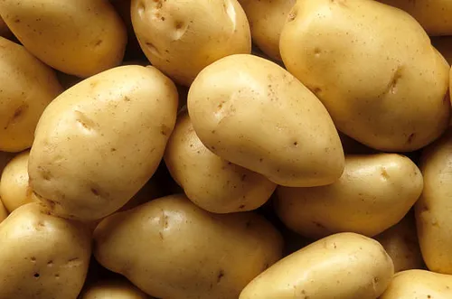

¿Por qué comer saludable?
Una alimentación saludable ayuda a mantener una buena salud y a prevenir enfermedades no transmisibles como la diabetes, las cardiopatías, los accidentes cerebrovasculares y el cáncer. Te compartimos algunos consejos prácticos que te llevarán a lograr una buena alimentación. Frutas, verduras y hortalizas. Ingerir al menos 400 gramos o cinco porciones de frutas y verduras al día reduce la posibilidad de desarrollar enfermedades no transmisibles. Se recomienda incluirlas en todas las comidas.
 Reducir el consumo total de grasa a menos del 30% de la ingesta calórica diaria contribuye a prevenir el aumento no saludable de peso. Se recomienda cocinar al vapor o hervir. Limita el consumo de alimentos horneados o fritos, así como de aperitivos y alimentos envasados. Sal, sodio y potasio. Un consumo elevado de sal e insuficiente de potasio contribuye a la hipertensión arterial que, a su vez, aumenta las probabilidades de desarrollar alguna enfermedad coronaria y accidente cerebrovascular. Te recomendamos reducir la ingesta de sal a menos de 5 gramos diarios. Azúcares. Para adultos y niños, la recomendación es disminuir la ingesta de azúcares libres a menos del 10% de la ingesta calórica total, una reducción a menos del 5% aporta beneficios adicionales para la salud como la reducción de los factores de riesgo de enfermedades cardiovasculares.